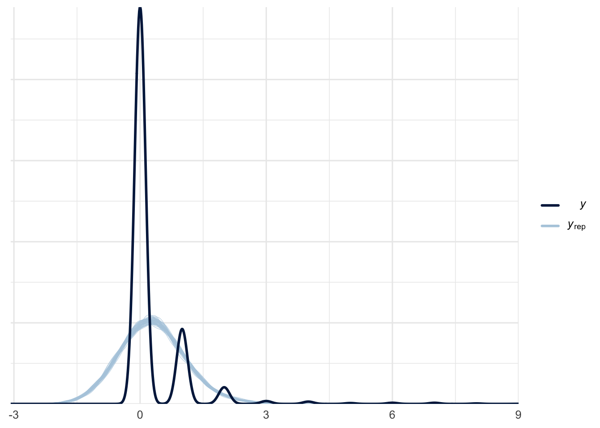

Packages used in this post
library(tidyverse)
library(broom)
library(modelsummary)
library(marginaleffects)
library(AER)
library(ggsci)
theme_set(theme_minimal(base_size = 12))Paw Hansen
March 25, 2024
Today I’m sitting at a cafe and feel like doing some quick data analysis. We’ll be working with the DoctorVisits data from the AER package. Our goal is first to learn what predicts number of doctor visits. Second, to practice the workflow advocated in Alexander (2023). That means, we’ll:
Let’s go!
For this example, we want to try to estimate what makes people go see their doctor. To plan this, we need to consider two things. First, what will a useful data set look like? And second, what will the final graph look like?
Concerning our first criterion, a useful data set should include a variable indicating how many times the respondent went to see their doctor for a given period of time. This will be our outcome variable when we get to modeling. In addition, our data set should include one or more predictors. These could be a the individual (i.e. respondent) level or perhaps we might want to consider some form of multilevel modeling - perhaps seeing your doctor or not also depends on things like doctor supply at the state level, your family’s total financial resources, and several other factors on primarily found at the individual level. IN iur example here, though, we’ll stick with what can be measured at the respondent level. Thus, a useful dataset might look a in [crossref].
Second, a useful graph could simply include a plot of the relevant predictors as well as their corresponding uncertainty intervals. [crossref] is one example.
[Make sketches]
Next, we should try to simulate what our dataset might look like as this will prepare us for any challenges we might end up facing once we have acquired the real dataset.
Now we’re ready to acquire a real dataset. A useful one is contained in the AER package.
visits gender age income illness reduced health private freepoor freerepat
1 1 female 0.19 0.55 1 4 1 yes no no
2 1 female 0.19 0.45 1 2 1 yes no no
3 1 male 0.19 0.90 3 0 0 no no no
4 1 male 0.19 0.15 1 0 0 no no no
5 1 male 0.19 0.45 2 5 1 no no no
6 1 female 0.19 0.35 5 1 9 no no no
nchronic lchronic
1 no no
2 no no
3 no no
4 no no
5 yes no
6 yes noNext, let’s start exploring our dataset. We should probably start by having a look at some basic descriptives:
| Mean | Std. Dev. | ||
|---|---|---|---|
| visits | 0.3 | 0.8 | |
| age | 0.4 | 0.2 | |
| income | 0.6 | 0.4 | |
| illness | 1.4 | 1.4 | |
| reduced | 0.9 | 2.9 | |
| health | 1.2 | 2.1 | |
| N | Pct. | ||
| gender | male | 2488 | 47.9 |
| female | 2702 | 52.1 | |
| private | no | 2892 | 55.7 |
| yes | 2298 | 44.3 | |
| freepoor | no | 4968 | 95.7 |
| yes | 222 | 4.3 | |
| freerepat | no | 4099 | 79.0 |
| yes | 1091 | 21.0 | |
| nchronic | no | 3098 | 59.7 |
| yes | 2092 | 40.3 | |
| lchronic | no | 4585 | 88.3 |
| yes | 605 | 11.7 |
And of course, we should plot our dependent variable to see how it looks:
We could also try to explore patterns in the data using a correlation matrix. To do so, we first need to recode any factor variables into dummies:
| visits | gender | age | income | illness | reduced | health | private | freepoor | freerepat | nchronic | lchronic | |
|---|---|---|---|---|---|---|---|---|---|---|---|---|
| visits | 1 | . | . | . | . | . | . | . | . | . | . | . |
| gender | 1 | . | . | . | . | . | . | . | . | . | . | |
| age | .12 | 1 | . | . | . | . | . | . | . | . | . | |
| income | −.08 | −.27 | 1 | . | . | . | . | . | . | . | . | |
| illness | .22 | .20 | −.15 | 1 | . | . | . | . | . | . | . | |
| reduced | .42 | .09 | −.05 | .22 | 1 | . | . | . | . | . | . | |
| health | .19 | .02 | −.09 | .36 | .28 | 1 | . | . | . | . | . | |
| private | −.01 | −.06 | .28 | −.05 | −.03 | −.05 | 1 | . | . | . | . | |
| freepoor | −.04 | −.16 | −.16 | −.03 | −.01 | .06 | −.19 | 1 | . | . | . | |
| freerepat | .11 | .60 | −.40 | .20 | .08 | .07 | −.46 | −.11 | 1 | . | . | |
| nchronic | .05 | .30 | −.08 | .25 | .00 | .02 | .03 | −.07 | .16 | 1 | . | |
| lchronic | .14 | .12 | −.07 | .22 | .22 | .19 | −.04 | .00 | .16 | −.30 | 1 |
Perhaps more useful is to model the thing:
| Poisson Model | Normal Model | |
|---|---|---|
| (Intercept) | −2.098 | 0.036 |
| (0.102) | (0.036) | |
| genderfemale | 0.156 | 0.034 |
| (0.056) | (0.022) | |
| age | 0.279 | 0.148 |
| (0.166) | (0.067) | |
| income | −0.187 | −0.056 |
| (0.085) | (0.031) | |
| illness | 0.186 | 0.060 |
| (0.018) | (0.008) | |
| reduced | 0.127 | 0.103 |
| (0.005) | (0.004) | |
| health | 0.031 | 0.017 |
| (0.010) | (0.005) | |
| privateyes | 0.126 | 0.035 |
| (0.072) | (0.025) | |
| freepooryes | −0.438 | −0.103 |
| (0.180) | (0.052) | |
| freerepatyes | 0.084 | 0.033 |
| (0.092) | (0.038) | |
| nchronicyes | 0.117 | 0.005 |
| (0.067) | (0.024) | |
| lchronicyes | 0.151 | 0.042 |
| (0.082) | (0.036) | |
| Num.Obs. | 5190 | 5190 |
| R2 | 0.202 | |
| R2 Adj. | 0.200 | |
| AIC | 6735.7 | 11243.1 |
| BIC | 6814.4 | 11328.3 |
| Log.Lik. | −3355.850 | −5608.565 |
| F | 152.175 | 119.029 |
| RMSE | 0.73 | 0.71 |
Same with rstanarm
SAMPLING FOR MODEL 'count' NOW (CHAIN 1).
Chain 1:
Chain 1: Gradient evaluation took 0.00135 seconds
Chain 1: 1000 transitions using 10 leapfrog steps per transition would take 13.5 seconds.
Chain 1: Adjust your expectations accordingly!
Chain 1:
Chain 1:
Chain 1: Iteration: 1 / 2000 [ 0%] (Warmup)
Chain 1: Iteration: 200 / 2000 [ 10%] (Warmup)
Chain 1: Iteration: 400 / 2000 [ 20%] (Warmup)
Chain 1: Iteration: 600 / 2000 [ 30%] (Warmup)
Chain 1: Iteration: 800 / 2000 [ 40%] (Warmup)
Chain 1: Iteration: 1000 / 2000 [ 50%] (Warmup)
Chain 1: Iteration: 1001 / 2000 [ 50%] (Sampling)
Chain 1: Iteration: 1200 / 2000 [ 60%] (Sampling)
Chain 1: Iteration: 1400 / 2000 [ 70%] (Sampling)
Chain 1: Iteration: 1600 / 2000 [ 80%] (Sampling)
Chain 1: Iteration: 1800 / 2000 [ 90%] (Sampling)
Chain 1: Iteration: 2000 / 2000 [100%] (Sampling)
Chain 1:
Chain 1: Elapsed Time: 2.82415 seconds (Warm-up)
Chain 1: 3.11273 seconds (Sampling)
Chain 1: 5.93688 seconds (Total)
Chain 1:
SAMPLING FOR MODEL 'count' NOW (CHAIN 2).
Chain 2:
Chain 2: Gradient evaluation took 0.000176 seconds
Chain 2: 1000 transitions using 10 leapfrog steps per transition would take 1.76 seconds.
Chain 2: Adjust your expectations accordingly!
Chain 2:
Chain 2:
Chain 2: Iteration: 1 / 2000 [ 0%] (Warmup)
Chain 2: Iteration: 200 / 2000 [ 10%] (Warmup)
Chain 2: Iteration: 400 / 2000 [ 20%] (Warmup)
Chain 2: Iteration: 600 / 2000 [ 30%] (Warmup)
Chain 2: Iteration: 800 / 2000 [ 40%] (Warmup)
Chain 2: Iteration: 1000 / 2000 [ 50%] (Warmup)
Chain 2: Iteration: 1001 / 2000 [ 50%] (Sampling)
Chain 2: Iteration: 1200 / 2000 [ 60%] (Sampling)
Chain 2: Iteration: 1400 / 2000 [ 70%] (Sampling)
Chain 2: Iteration: 1600 / 2000 [ 80%] (Sampling)
Chain 2: Iteration: 1800 / 2000 [ 90%] (Sampling)
Chain 2: Iteration: 2000 / 2000 [100%] (Sampling)
Chain 2:
Chain 2: Elapsed Time: 3.13065 seconds (Warm-up)
Chain 2: 2.93512 seconds (Sampling)
Chain 2: 6.06578 seconds (Total)
Chain 2:
SAMPLING FOR MODEL 'count' NOW (CHAIN 3).
Chain 3:
Chain 3: Gradient evaluation took 0.000178 seconds
Chain 3: 1000 transitions using 10 leapfrog steps per transition would take 1.78 seconds.
Chain 3: Adjust your expectations accordingly!
Chain 3:
Chain 3:
Chain 3: Iteration: 1 / 2000 [ 0%] (Warmup)
Chain 3: Iteration: 200 / 2000 [ 10%] (Warmup)
Chain 3: Iteration: 400 / 2000 [ 20%] (Warmup)
Chain 3: Iteration: 600 / 2000 [ 30%] (Warmup)
Chain 3: Iteration: 800 / 2000 [ 40%] (Warmup)
Chain 3: Iteration: 1000 / 2000 [ 50%] (Warmup)
Chain 3: Iteration: 1001 / 2000 [ 50%] (Sampling)
Chain 3: Iteration: 1200 / 2000 [ 60%] (Sampling)
Chain 3: Iteration: 1400 / 2000 [ 70%] (Sampling)
Chain 3: Iteration: 1600 / 2000 [ 80%] (Sampling)
Chain 3: Iteration: 1800 / 2000 [ 90%] (Sampling)
Chain 3: Iteration: 2000 / 2000 [100%] (Sampling)
Chain 3:
Chain 3: Elapsed Time: 3.26012 seconds (Warm-up)
Chain 3: 2.87063 seconds (Sampling)
Chain 3: 6.13074 seconds (Total)
Chain 3:
SAMPLING FOR MODEL 'count' NOW (CHAIN 4).
Chain 4:
Chain 4: Gradient evaluation took 0.00018 seconds
Chain 4: 1000 transitions using 10 leapfrog steps per transition would take 1.8 seconds.
Chain 4: Adjust your expectations accordingly!
Chain 4:
Chain 4:
Chain 4: Iteration: 1 / 2000 [ 0%] (Warmup)
Chain 4: Iteration: 200 / 2000 [ 10%] (Warmup)
Chain 4: Iteration: 400 / 2000 [ 20%] (Warmup)
Chain 4: Iteration: 600 / 2000 [ 30%] (Warmup)
Chain 4: Iteration: 800 / 2000 [ 40%] (Warmup)
Chain 4: Iteration: 1000 / 2000 [ 50%] (Warmup)
Chain 4: Iteration: 1001 / 2000 [ 50%] (Sampling)
Chain 4: Iteration: 1200 / 2000 [ 60%] (Sampling)
Chain 4: Iteration: 1400 / 2000 [ 70%] (Sampling)
Chain 4: Iteration: 1600 / 2000 [ 80%] (Sampling)
Chain 4: Iteration: 1800 / 2000 [ 90%] (Sampling)
Chain 4: Iteration: 2000 / 2000 [100%] (Sampling)
Chain 4:
Chain 4: Elapsed Time: 3.17286 seconds (Warm-up)
Chain 4: 3.01513 seconds (Sampling)
Chain 4: 6.18799 seconds (Total)
Chain 4:
SAMPLING FOR MODEL 'continuous' NOW (CHAIN 1).
Chain 1:
Chain 1: Gradient evaluation took 0.000609 seconds
Chain 1: 1000 transitions using 10 leapfrog steps per transition would take 6.09 seconds.
Chain 1: Adjust your expectations accordingly!
Chain 1:
Chain 1:
Chain 1: Iteration: 1 / 2000 [ 0%] (Warmup)
Chain 1: Iteration: 200 / 2000 [ 10%] (Warmup)
Chain 1: Iteration: 400 / 2000 [ 20%] (Warmup)
Chain 1: Iteration: 600 / 2000 [ 30%] (Warmup)
Chain 1: Iteration: 800 / 2000 [ 40%] (Warmup)
Chain 1: Iteration: 1000 / 2000 [ 50%] (Warmup)
Chain 1: Iteration: 1001 / 2000 [ 50%] (Sampling)
Chain 1: Iteration: 1200 / 2000 [ 60%] (Sampling)
Chain 1: Iteration: 1400 / 2000 [ 70%] (Sampling)
Chain 1: Iteration: 1600 / 2000 [ 80%] (Sampling)
Chain 1: Iteration: 1800 / 2000 [ 90%] (Sampling)
Chain 1: Iteration: 2000 / 2000 [100%] (Sampling)
Chain 1:
Chain 1: Elapsed Time: 0.139911 seconds (Warm-up)
Chain 1: 0.584403 seconds (Sampling)
Chain 1: 0.724314 seconds (Total)
Chain 1:
SAMPLING FOR MODEL 'continuous' NOW (CHAIN 2).
Chain 2:
Chain 2: Gradient evaluation took 2.2e-05 seconds
Chain 2: 1000 transitions using 10 leapfrog steps per transition would take 0.22 seconds.
Chain 2: Adjust your expectations accordingly!
Chain 2:
Chain 2:
Chain 2: Iteration: 1 / 2000 [ 0%] (Warmup)
Chain 2: Iteration: 200 / 2000 [ 10%] (Warmup)
Chain 2: Iteration: 400 / 2000 [ 20%] (Warmup)
Chain 2: Iteration: 600 / 2000 [ 30%] (Warmup)
Chain 2: Iteration: 800 / 2000 [ 40%] (Warmup)
Chain 2: Iteration: 1000 / 2000 [ 50%] (Warmup)
Chain 2: Iteration: 1001 / 2000 [ 50%] (Sampling)
Chain 2: Iteration: 1200 / 2000 [ 60%] (Sampling)
Chain 2: Iteration: 1400 / 2000 [ 70%] (Sampling)
Chain 2: Iteration: 1600 / 2000 [ 80%] (Sampling)
Chain 2: Iteration: 1800 / 2000 [ 90%] (Sampling)
Chain 2: Iteration: 2000 / 2000 [100%] (Sampling)
Chain 2:
Chain 2: Elapsed Time: 0.132247 seconds (Warm-up)
Chain 2: 0.602229 seconds (Sampling)
Chain 2: 0.734476 seconds (Total)
Chain 2:
SAMPLING FOR MODEL 'continuous' NOW (CHAIN 3).
Chain 3:
Chain 3: Gradient evaluation took 2.4e-05 seconds
Chain 3: 1000 transitions using 10 leapfrog steps per transition would take 0.24 seconds.
Chain 3: Adjust your expectations accordingly!
Chain 3:
Chain 3:
Chain 3: Iteration: 1 / 2000 [ 0%] (Warmup)
Chain 3: Iteration: 200 / 2000 [ 10%] (Warmup)
Chain 3: Iteration: 400 / 2000 [ 20%] (Warmup)
Chain 3: Iteration: 600 / 2000 [ 30%] (Warmup)
Chain 3: Iteration: 800 / 2000 [ 40%] (Warmup)
Chain 3: Iteration: 1000 / 2000 [ 50%] (Warmup)
Chain 3: Iteration: 1001 / 2000 [ 50%] (Sampling)
Chain 3: Iteration: 1200 / 2000 [ 60%] (Sampling)
Chain 3: Iteration: 1400 / 2000 [ 70%] (Sampling)
Chain 3: Iteration: 1600 / 2000 [ 80%] (Sampling)
Chain 3: Iteration: 1800 / 2000 [ 90%] (Sampling)
Chain 3: Iteration: 2000 / 2000 [100%] (Sampling)
Chain 3:
Chain 3: Elapsed Time: 0.137286 seconds (Warm-up)
Chain 3: 0.595953 seconds (Sampling)
Chain 3: 0.733239 seconds (Total)
Chain 3:
SAMPLING FOR MODEL 'continuous' NOW (CHAIN 4).
Chain 4:
Chain 4: Gradient evaluation took 2.3e-05 seconds
Chain 4: 1000 transitions using 10 leapfrog steps per transition would take 0.23 seconds.
Chain 4: Adjust your expectations accordingly!
Chain 4:
Chain 4:
Chain 4: Iteration: 1 / 2000 [ 0%] (Warmup)
Chain 4: Iteration: 200 / 2000 [ 10%] (Warmup)
Chain 4: Iteration: 400 / 2000 [ 20%] (Warmup)
Chain 4: Iteration: 600 / 2000 [ 30%] (Warmup)
Chain 4: Iteration: 800 / 2000 [ 40%] (Warmup)
Chain 4: Iteration: 1000 / 2000 [ 50%] (Warmup)
Chain 4: Iteration: 1001 / 2000 [ 50%] (Sampling)
Chain 4: Iteration: 1200 / 2000 [ 60%] (Sampling)
Chain 4: Iteration: 1400 / 2000 [ 70%] (Sampling)
Chain 4: Iteration: 1600 / 2000 [ 80%] (Sampling)
Chain 4: Iteration: 1800 / 2000 [ 90%] (Sampling)
Chain 4: Iteration: 2000 / 2000 [100%] (Sampling)
Chain 4:
Chain 4: Elapsed Time: 0.127763 seconds (Warm-up)
Chain 4: 0.570899 seconds (Sampling)
Chain 4: 0.698662 seconds (Total)
Chain 4:
SAMPLING FOR MODEL 'count' NOW (CHAIN 1).
Chain 1:
Chain 1: Gradient evaluation took 0.001221 seconds
Chain 1: 1000 transitions using 10 leapfrog steps per transition would take 12.21 seconds.
Chain 1: Adjust your expectations accordingly!
Chain 1:
Chain 1:
Chain 1: Iteration: 1 / 2000 [ 0%] (Warmup)
Chain 1: Iteration: 200 / 2000 [ 10%] (Warmup)
Chain 1: Iteration: 400 / 2000 [ 20%] (Warmup)
Chain 1: Iteration: 600 / 2000 [ 30%] (Warmup)
Chain 1: Iteration: 800 / 2000 [ 40%] (Warmup)
Chain 1: Iteration: 1000 / 2000 [ 50%] (Warmup)
Chain 1: Iteration: 1001 / 2000 [ 50%] (Sampling)
Chain 1: Iteration: 1200 / 2000 [ 60%] (Sampling)
Chain 1: Iteration: 1400 / 2000 [ 70%] (Sampling)
Chain 1: Iteration: 1600 / 2000 [ 80%] (Sampling)
Chain 1: Iteration: 1800 / 2000 [ 90%] (Sampling)
Chain 1: Iteration: 2000 / 2000 [100%] (Sampling)
Chain 1:
Chain 1: Elapsed Time: 7.68772 seconds (Warm-up)
Chain 1: 8.40601 seconds (Sampling)
Chain 1: 16.0937 seconds (Total)
Chain 1:
SAMPLING FOR MODEL 'count' NOW (CHAIN 2).
Chain 2:
Chain 2: Gradient evaluation took 0.000455 seconds
Chain 2: 1000 transitions using 10 leapfrog steps per transition would take 4.55 seconds.
Chain 2: Adjust your expectations accordingly!
Chain 2:
Chain 2:
Chain 2: Iteration: 1 / 2000 [ 0%] (Warmup)
Chain 2: Iteration: 200 / 2000 [ 10%] (Warmup)
Chain 2: Iteration: 400 / 2000 [ 20%] (Warmup)
Chain 2: Iteration: 600 / 2000 [ 30%] (Warmup)
Chain 2: Iteration: 800 / 2000 [ 40%] (Warmup)
Chain 2: Iteration: 1000 / 2000 [ 50%] (Warmup)
Chain 2: Iteration: 1001 / 2000 [ 50%] (Sampling)
Chain 2: Iteration: 1200 / 2000 [ 60%] (Sampling)
Chain 2: Iteration: 1400 / 2000 [ 70%] (Sampling)
Chain 2: Iteration: 1600 / 2000 [ 80%] (Sampling)
Chain 2: Iteration: 1800 / 2000 [ 90%] (Sampling)
Chain 2: Iteration: 2000 / 2000 [100%] (Sampling)
Chain 2:
Chain 2: Elapsed Time: 7.43601 seconds (Warm-up)
Chain 2: 9.21952 seconds (Sampling)
Chain 2: 16.6555 seconds (Total)
Chain 2:
SAMPLING FOR MODEL 'count' NOW (CHAIN 3).
Chain 3:
Chain 3: Gradient evaluation took 0.000508 seconds
Chain 3: 1000 transitions using 10 leapfrog steps per transition would take 5.08 seconds.
Chain 3: Adjust your expectations accordingly!
Chain 3:
Chain 3:
Chain 3: Iteration: 1 / 2000 [ 0%] (Warmup)
Chain 3: Iteration: 200 / 2000 [ 10%] (Warmup)
Chain 3: Iteration: 400 / 2000 [ 20%] (Warmup)
Chain 3: Iteration: 600 / 2000 [ 30%] (Warmup)
Chain 3: Iteration: 800 / 2000 [ 40%] (Warmup)
Chain 3: Iteration: 1000 / 2000 [ 50%] (Warmup)
Chain 3: Iteration: 1001 / 2000 [ 50%] (Sampling)
Chain 3: Iteration: 1200 / 2000 [ 60%] (Sampling)
Chain 3: Iteration: 1400 / 2000 [ 70%] (Sampling)
Chain 3: Iteration: 1600 / 2000 [ 80%] (Sampling)
Chain 3: Iteration: 1800 / 2000 [ 90%] (Sampling)
Chain 3: Iteration: 2000 / 2000 [100%] (Sampling)
Chain 3:
Chain 3: Elapsed Time: 8.58572 seconds (Warm-up)
Chain 3: 8.78884 seconds (Sampling)
Chain 3: 17.3746 seconds (Total)
Chain 3:
SAMPLING FOR MODEL 'count' NOW (CHAIN 4).
Chain 4:
Chain 4: Gradient evaluation took 0.00063 seconds
Chain 4: 1000 transitions using 10 leapfrog steps per transition would take 6.3 seconds.
Chain 4: Adjust your expectations accordingly!
Chain 4:
Chain 4:
Chain 4: Iteration: 1 / 2000 [ 0%] (Warmup)
Chain 4: Iteration: 200 / 2000 [ 10%] (Warmup)
Chain 4: Iteration: 400 / 2000 [ 20%] (Warmup)
Chain 4: Iteration: 600 / 2000 [ 30%] (Warmup)
Chain 4: Iteration: 800 / 2000 [ 40%] (Warmup)
Chain 4: Iteration: 1000 / 2000 [ 50%] (Warmup)
Chain 4: Iteration: 1001 / 2000 [ 50%] (Sampling)
Chain 4: Iteration: 1200 / 2000 [ 60%] (Sampling)
Chain 4: Iteration: 1400 / 2000 [ 70%] (Sampling)
Chain 4: Iteration: 1600 / 2000 [ 80%] (Sampling)
Chain 4: Iteration: 1800 / 2000 [ 90%] (Sampling)
Chain 4: Iteration: 2000 / 2000 [100%] (Sampling)
Chain 4:
Chain 4: Elapsed Time: 8.86754 seconds (Warm-up)
Chain 4: 8.74941 seconds (Sampling)
Chain 4: 17.617 seconds (Total)
Chain 4: 